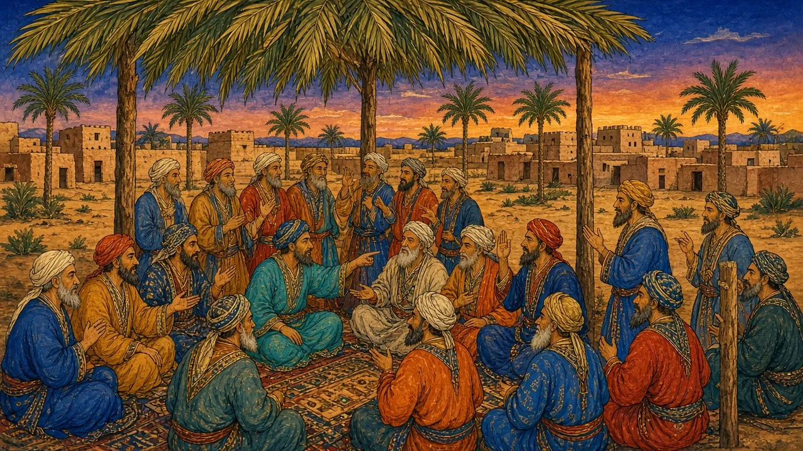
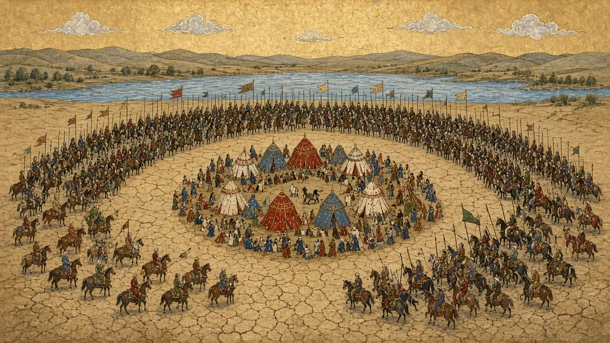
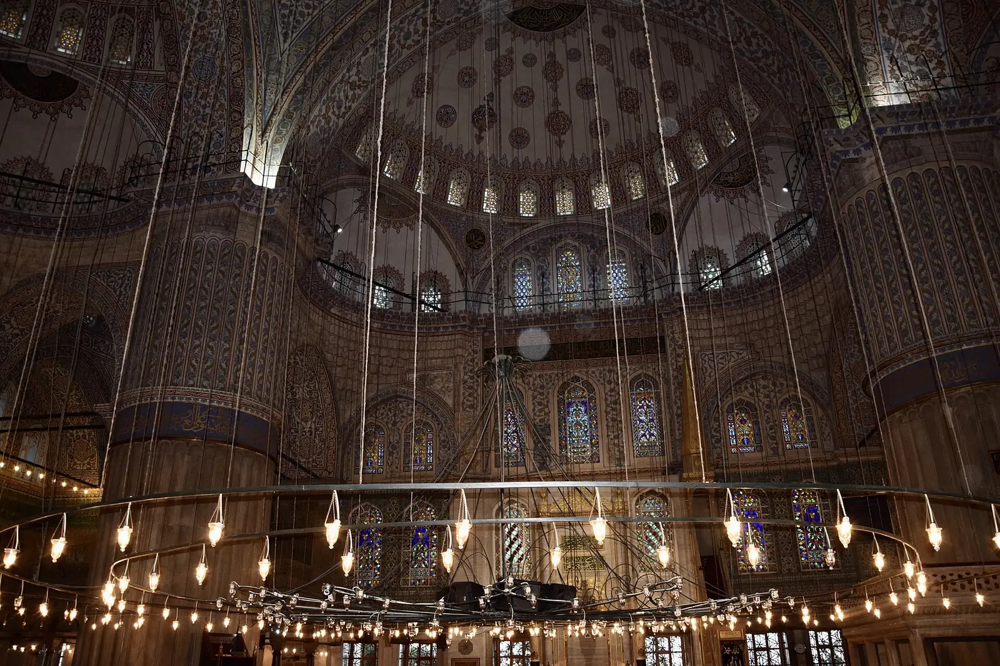
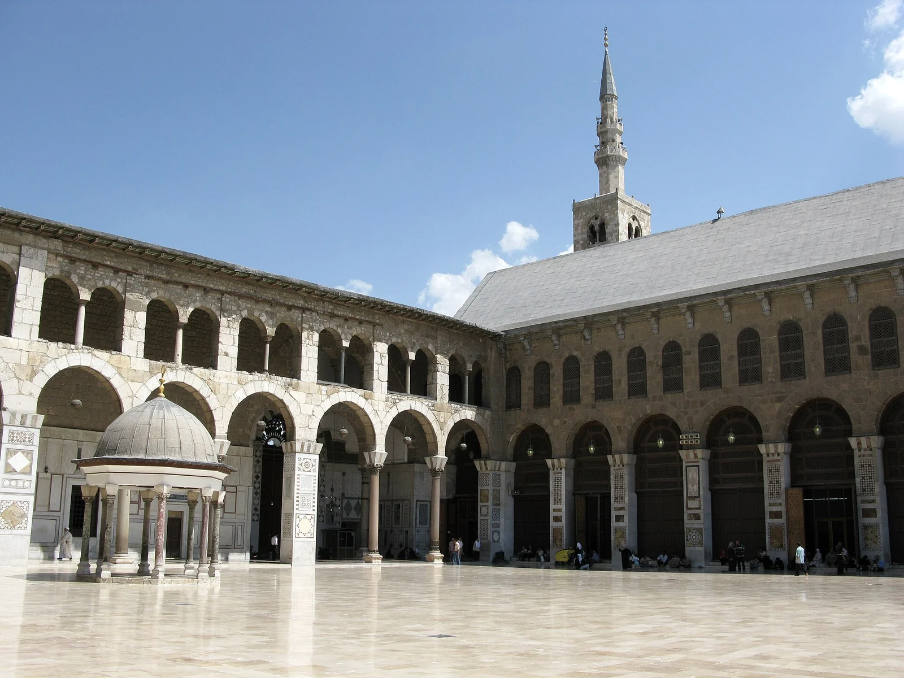
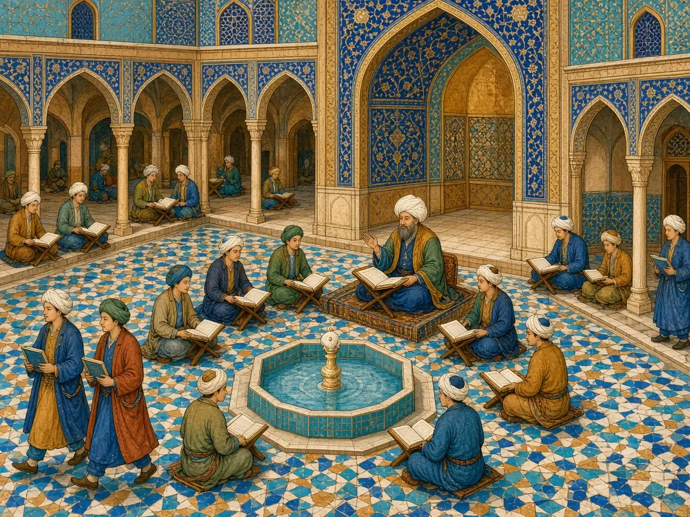
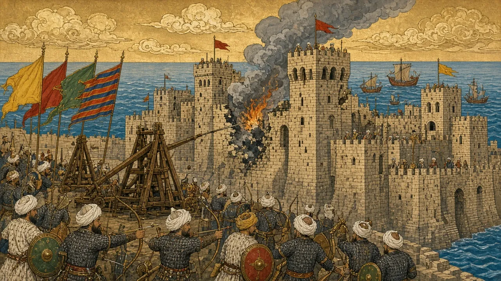
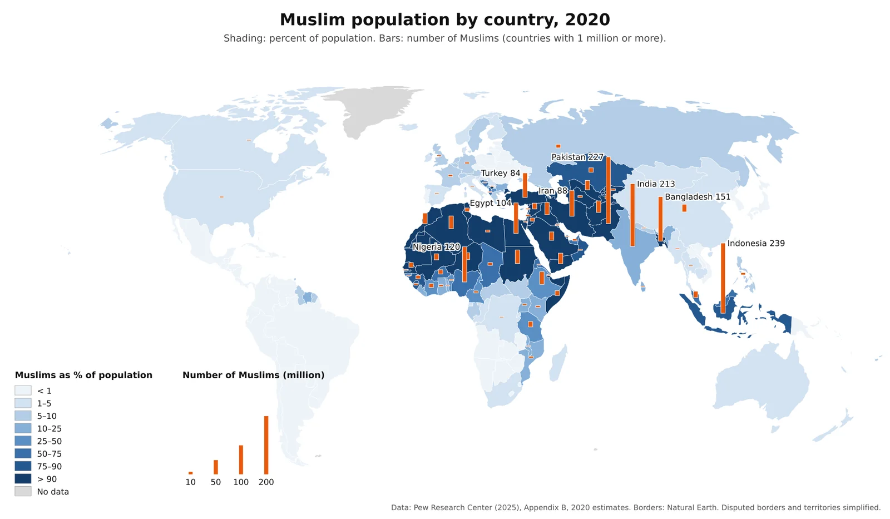

Background essay for Lecture 2 · PHIL 210 World Religions · Chapter 12: Islam · Steven Austin
This essay is the full written version of Lecture 2. It follows the lecture from beginning to end and includes the required independent study, placed in the story where each topic belongs, so that the whole lecture can be read as one continuous account. Page numbers in parentheses refer to Robert E. Van Voorst, RELG: World, 4th edition, Chapter 12. Material from outside the textbook is marked as such, and the notes at the end give its sources. Where the textbook reports what Muslims believe, or what Sunni or Shi‘a tradition holds, the essay says so.

Lecture 1 ended with a death. In 632 Muhammad died in Medina, ruling nearly all of Arabia, with no surviving son and no publicly named successor. This lecture follows the consequences for thirteen centuries.
The story has two halves. The first half is a family quarrel with world-historical results: who should lead the community, a trusted elder chosen by the leading men or a member of the Prophet’s own family? The answer split Islam into Sunnis and Shi‘as, and the split was sealed in blood at Karbala in 680. That is Review Question 3. The second half is a tour of empires: the Umayyads, the Abbasid golden age in Baghdad (Review Question 4), the Turks, the Crusades, the fall of Constantinople, three great early modern empires, and finally the collapse of the Ottoman Empire after World War I, which left Muslims without a caliph for the first time.
As you go, keep a two-column list: what Sunnis believe about leadership and what Shi‘as believe. Nearly every section adds something to one column or the other. The painting imagines the elders of Medina meeting at dusk on the day the question first arose.1
1. The Question of 632
The pressing issue at Muhammad’s death was who would succeed him as leader of the Islamic movement, and how it was settled affects Islam through today.
p. 296
Start with the sentence quoted above. The chapter says the pressing issue at Muhammad’s death was who would succeed him, and how it was settled “affects Islam through today” (p. 296). For whatever reason, Muhammad had not publicly designated a successor, so the community had to choose.
What exactly were they choosing? A caliph, the “representative” or “successor” of Muhammad. Be clear on what that meant. The caliph would not be a new prophet: Muslims believe Muhammad was the final prophet, so the caliph would receive no new revelations from Gabriel and would not change Islam in major ways. Instead he would lead the community in its political and religious life, and he would be the ruler of all Muslim lands (p. 296). In other words, he inherited Muhammad’s role as statesman, not his role as prophet.
Think about the options in an Arab tribal culture. Leadership would usually stay in the family. But Muhammad had no surviving son, and the community he built was supposed to be bound by faith, not by blood. Those two facts pull in opposite directions, and the next section shows the two candidates who represented them.2
2. Ali or Abu Bakr?
Two men stood out. The first was Ali (ah-LEE). In Arab culture leadership would usually stay in the family, and since Muhammad had no surviving son, the leading family choice was his cousin Ali, who was also his son-in-law through his marriage to Muhammad’s daughter Fatima. Ali had always been enthusiastic for Islam, and he claimed that Muhammad had privately designated him as his successor. However, many contested Ali’s fitness to rule (p. 296).
The second was Abu Bakr. The chapter says, “A majority consensus arose among Muhammad’s most powerful followers that Abu Bakr (AHB-oo BAHK-uhr), Muhammad’s father-in-law, would be Muhammad’s successor.” He was an early believer and one of Islam’s main military leaders. He soon took over for three reasons: his power base in the Muslim military forces; the need to squelch defections from Islam by several Arab tribes when Muhammad died; and his connection to the Prophet through A’isha, Muhammad’s favorite wife, who was Abu Bakr’s daughter (p. 296).
Notice the contrast: family and designation on one side, community consensus and practical strength on the other.
Review Question 3 (p. 296): What caused the initial division between the Sunni and Shi‘a branches of Islam? First anchor sentence, word for word: “A majority consensus arose among Muhammad’s most powerful followers that Abu Bakr (AHB-oo BAHK-uhr), Muhammad’s father-in-law, would be Muhammad’s successor.”3
3. The Seeds of Division
Naturally, the chapter says, Ali’s supporters objected, “and the seeds of division were sown” (p. 296). Here is the second anchor sentence for Review Question 3: “The groups that grew from these seeds are the Shi‘as or Shi‘ites, ‘followers’ or ‘party’ (of Ali), and the Sunnis, the ‘people of the tradition,’ who formed the majority of Muslims.”
Learn the two names by their meanings. Shi‘a means “party” or “followers,” short for the party of Ali. Shi‘as hold that Muhammad’s true successors descend from his son-in-law Ali. Sunni comes from sunna, “tradition,” the custom of the Prophet. Sunnis accepted the community’s choice of Abu Bakr and the caliphs who followed. Today Shi‘as are about 10 to 15 percent of Muslims (p. 301).
The most important thing to notice is what the split was about. Sunnis and Shi‘as share the same God, the same Qur’an, the same Prophet, and the same basic pillars. The original disagreement was political: who should lead the community, and on what basis. Over the centuries that political disagreement grew into differences in religious authority, holy places, and practice, which you will see later in this lecture.
Review Question 3 (p. 296): second anchor sentence, quoted in the first paragraph above.4
Chapter 12 Review Question 3
What caused the initial division between the Sunni and Shi‘a branches of Islam?
Stop and write your answer to Review Question 3 now, in four or five sentences.
Begin with the cause: Muhammad died in 632 without a surviving son and without publicly naming a successor, so the community had to choose a caliph. Then present the two candidates. One was a member of the Prophet’s family who claimed a private designation; the other was the Prophet’s father-in-law, chosen by a majority of the most powerful followers. Use the textbook’s three reasons the second candidate prevailed.
Next, name the groups that grew from the dispute and give the meaning of each name. Finish with one sentence on the result: the minority who believed leadership belonged to the Prophet’s family became a separate branch. The rest of this lecture shows the division hardening as the family candidate was passed over twice more and his son was killed at Karbala, so if you have time, add a sentence about that.
Both anchor sentences are on p. 296. Check that your answer uses their key words, especially “majority consensus” and the meanings of the two names.5
4. Passed Over Again, and Again
The rejection of Ali’s leadership happened two more times (p. 296). When Abu Bakr died in 634 after only two years, the leading men chose Umar, not Ali. When Umar was assassinated in 644, they chose Uthman, a member of the powerful Umayyad clan of Mecca, again not Ali.
The chapter says Ali’s supporters grew bitter about these rejections: “The caliphate seemed to be moving further and further from Muhammad’s family” (p. 298). Picture it from their side. Each time, the man closest to the Prophet by blood and marriage was passed over in favor of an older companion with stronger backing.
Despite the conflict, Islam continued to spread by Arab military conquest followed by Muslim missionary activity (p. 298). Under Umar especially, Arab armies took Syria, Jerusalem, Egypt, Iraq, and much of Persia. The chapter’s timeline calls 635 to 749 a period of “rapid territorial expansion of Arab rule” (p. 325). Look back at the expansion map from Lecture 1, Map 12.1: the second color shows these conquests.
Keep the table’s dates in mind; the next section shows why Uthman matters for every Muslim, Sunni or Shi‘a.6
| Caliph | Rule | What happened |
|---|---|---|
| Abu Bakr | 632–634 | Squelched tribal defections; died after two years |
| Umar | 634–644 | Ali passed over a second time; Umar assassinated in 644 |
| Uthman | 644–656 | Ali passed over a third time; Uthman issued the Qur’an; assassinated by rebels in 656 |
5. Uthman Fixes the Text

Uthman’s reign was troubled, but he did one thing that, in the chapter’s words, “would influence all of Islam to come”: he gathered Muhammad’s revelations and issued an authoritative edition of the Qur’an (p. 298).
Here is the problem he solved. Muhammad himself had not committed any of the revelations to writing, much less overseen that process. His followers had recorded his recitations on parchment, palm leaves, and even pieces of wood, and many people had memorized them. As Islam spread across an empire, versions began to differ. Uthman gathered the written pieces along with the collections that already existed. He kept what he knew to be authentic and destroyed the rest (p. 298). The painting imagines his scribes at work, with the brazier ready for the rejected copies.
The result was a single standard text. The chapter says, “The Qur’an emerged as we have it today, and Muslims believe that it perfectly reflects Gabriel’s revelations to Muhammad” (p. 298). Sunnis and Shi‘as alike use this text. Lecture 3 returns to the Qur’an itself and, in its required study, to how scholars describe the compiling process.7
6. Ali, the Last Rightly Guided Caliph
In 656 rebels assassinated Uthman, and Ali finally became caliph. The chapter calls him “the last of what Muslims call the Rightly Guided Caliphs,” the first four caliphs whom God directed to be faithful in ways other caliphs have not been (p. 298). Learn the four in order: Abu Bakr, Umar, Uthman, Ali. Sunnis honor all four; Shi‘as hold that only Ali was the rightful leader.
Ali’s rule was one long crisis. A leader of the Umayyad clan, Uthman’s relatives, soon claimed the caliphate for himself. Hostilities increased, and their armies faced off in 661. When Ali tried to compromise and avoid war, some of his own followers killed him (p. 298). The key terms below name them, from outside the textbook. War did break out, and the chapter says “the Sunnis were triumphant over the Shi‘as. Sunnis had become the majority tradition of Muslims, in fact as well as in name.” The timeline calls 656 to 661 the first civil war and dates the formation of the Shi‘a branch from 656 (p. 325).
One modern echo: in 2014 the leader of the so-called Islamic State claimed to be a caliph like the Rightly Guided Caliphs (p. 298). Lecture 5 covers that movement.8
7. Muawiya, Hassan, and Hereditary Rule
The textbook tells the story of Karbala briefly, and this section fills in the people behind it, mostly from outside the textbook. Read it as background that explains why the Shi‘a cause became so passionate.
The chapter says that after Uthman’s murder, “a leader of the Umayyad tribe soon claimed the caliphate,” and that Ali’s armies faced his in 661 (p. 298). That leader was Muawiya, Uthman’s kinsman and the long-serving governor of Syria. He blamed Ali for failing to punish Uthman’s killers. After Ali’s assassination in 661, Muawiya became caliph and founded the Umayyad dynasty, ruling from Damascus.
What about Ali’s elder son, Hassan? The chapter says he “gave up his claim due to illness and died soon afterward” (p. 301). Most histories describe it differently: Hassan made a treaty with Muawiya in 661 and withdrew to Medina, where he died around 670. Shi‘a tradition holds that he was poisoned. Report the textbook’s version on the quiz, and know that sources disagree.
The decisive step came next. Earlier caliphs had been chosen by the leading men of the community. Muawiya instead named his own son, Yazid, as his heir, turning the caliphate into a hereditary monarchy. When Muawiya died in 680, Husain, Ali’s younger son, refused to accept Yazid, set out for Iraq where supporters had invited him, and was killed at Karbala by Yazid’s army.
Notice the irony. Sunnis had first rejected Ali partly because leadership by family was not supposed to be the rule; within thirty years the caliphate had become a family possession anyway, just not the Prophet’s family. For Shi‘as, Yazid became the symbol of corrupt power, and Husain the symbol of righteous resistance.9
8. Karbala, 680

Ali’s death in 661 made the split formal and lasting. Ali had two sons, Hassan and Husain, who were of course the grandsons of Muhammad. Shi‘as claimed then, and still claim, that this descent made them the rightful caliphs. The chapter says Hassan gave up his claim due to illness and died soon afterward (p. 301); the previous section, on hereditary rule, gives the fuller story.
Then came the defining tragedy of Shi‘a history. In 680 Husain’s small army battled the Sunnis near the town of Karbala, in present-day Iraq. The Sunnis cut off the Shi‘a army from its water supply and then destroyed it. When Husain’s severed head was thrown over the wall of Karbala, his supporters in the town put it on a lance and carried it around in deep mourning (p. 301). The painting imagines the camp surrounded and the river blocked.
Shi‘a Islam continued as a separate group, averaging about 10 to 15 percent of all Muslims, but never again would Shi‘as challenge Sunnis for control of Islam as a whole (p. 301). Karbala turned a political defeat into a religious identity: Husain became the model martyr, as the next section shows.10
9. Ashura: Mourning a Martyr

Every year Shi‘as remember Karbala. The day of Husain’s death, the tenth of the month of Muharram, is observed as a day of mourning called Ashura (uh-SHOOR-uh), “the tenth” (p. 301). The photograph above shows mourners in black at an Ashura gathering.
The chapter explains how the meaning of Karbala changed. Husain’s death is now viewed as martyrdom, a holy death, for the true form of Islam, and commitment to martyrdom for Islam became a leading part of Shi‘a. In mass processions still held on Ashura, many Shi‘a men connect with Husain’s martyrdom by lashing themselves with chains and whips until their blood flows (p. 301). Many Shi‘a scholars today discourage the bloodiest forms and encourage blood donation instead, and many mourners simply beat their chests in rhythm.
Ashura has also shaped modern politics. The chapter says it was on Ashura in 1979 that Shi‘a radicals in Iran’s capital stormed the American embassy and held its staff hostage for more than a year (p. 301). Historians date the seizure to November 1979, so treat that detail as the chapter’s claim. The key terms below add Khomeini.11
10. Imam and Mahdi

Shi‘as believe the line of Islamic leadership continues through Ali and Husain, that is, through the family of Muhammad. Each leader receives, as Shi‘as claim Ali received from Muhammad, a direct designation of succession from his predecessor and a supernatural knowledge of Islam that makes him an effective leader (p. 301).
The Arabic word for leader is imam, and the chapter warns that it carries different, sometimes confusing meanings. For Sunnis an imam is the leader of prayer in a mosque, someone you might meet any Friday. For Shi‘as the imam is the religious and political leader of the community. Shi‘as typically view their imam’s interpretation of Islam as perfect and fully authoritative, and sometimes as unusually holy, even saintly. All this makes for more powerful religious leaders in Shi‘a than in Sunni groups (pp. 301–302).
The largest Shi‘a group, the Twelvers, holds that the twelfth imam vanished as a child and will return near the end of time as the Mahdi, “the one guided” by God. The chapter says he is “still living in a hidden cave” (p. 302); Twelver teaching speaks of the imam’s hiddenness, or occultation, without fixing a place. The photograph above shows Husain’s shrine in Karbala, today a goal of Shi‘a pilgrimage.12
11. Three Kinds of Shi‘a
The chapter says Shi‘a history is “a story of continual internal splits,” and adds a general rule: splinter groups in religion are often beset by internal splintering; “splitters keep splitting” (p. 302). Three main groups account for most Shi‘as today, and each is named for how many of the original imams it recognizes.
The Twelvers, also called Imamites, recognize twelve imams in the line of succession from Muhammad. The chapter says the twelfth imam vanished when he was five years old and is “still living in a hidden cave”; he will return near the end of time as the Mahdi and establish worldwide Shi‘a rule (p. 302). Twelver teaching itself speaks of his hiddenness, or occultation, beginning in 874, without fixing where he is. Twelvers are the majority of Shi‘as: most Iranian and Iraqi Shi‘as, and also present in Lebanon.
The Seveners, or Ismailites, are found in India, Pakistan, and East Africa. Some believe the seventh imam, Ismail, was God in human form, which all other Muslims regard as heretical, and that he will return as the Mahdi. The chapter connects the Seveners to the medieval Hashishin, saying they used hashish before killing for hire and gave us the word “assassin” (p. 302); historians now treat the hashish story as a legend spread by their enemies, though the word’s origin is real. The largest Sevener group is led by the Aga Khan. The chapter names Prince Karim Aga Khan IV as the forty-ninth imam; after it was written he died, in February 2025, and his son Rahim became Aga Khan V, the fiftieth imam.
The Fivers, or Zaidites, are a small sect found mostly in Yemen. Their fifth imam, Zaid, began a separate line that eventually died out. They tend to be less hostile to Sunnis, but have been in armed rebellion against Yemen’s Sunni government (p. 302); the Houthi movement that took Yemen’s capital in 2014 comes from a Zaidi background.13
12. How Sunnis and Shi‘as Live Apart

The chapter describes how the split of 632 and 680 shapes daily life today (p. 302). Shi‘as and Sunnis have typically lived and worshiped apart. Shi‘as have their own territories where they predominate, such as Iran, and beyond those they tend to be minorities in many Sunni nations. Where Sunnis and Shi‘as are found in the same cities, they prefer to live in different neighborhoods. They usually do not intermarry or go into business with each other, and they have their own mosques and leaders.
Religious practice differs at the margins. Shi‘as have five additional pillars, besides the Five Pillars common to all Muslims, which stress Shi‘a doctrines and practices, and there are slight differences in their formal prayers (p. 302). Lecture 4’s required study lists the Shi‘a pillars. Shi‘as also have their own holy places of pilgrimage, especially the shrines of the imams; the chapter mentions this when it discusses the Hajj (p. 319), and you saw Husain’s shrine at Karbala.
Be careful not to overstate the division. Sunnis and Shi‘as pray together at the Hajj in Mecca, share the Qur’an and the Five Pillars, and in many places, such as parts of Iraq and Lebanon before recent wars, intermarriage was common. Still, the chapter notes that in a 2016 book, The New Sectarianism, Geneive Abdo shows that the Arab Spring uprisings increased conflict between Sunnis and Shi‘as over Islamic identity (p. 302). Rivalries between Sunni Saudi Arabia and Shi‘a Iran have deepened that tension.
The photograph is the dome of the Sultan Ahmed Mosque in Istanbul, built under the Sunni Ottomans in the early 1600s, at the same time the Shi‘a Safavids were building great mosques in Isfahan.14
13. The Umayyads: An Arab Empire

With Ali dead, the chapter traces the rest of Islamic history by its dynasties and its geographic growth (p. 298). First came the Umayyads. Sunni leadership belonged to the Umayyad clan for about one hundred years, from 661 to 750. Their capital was Damascus, in Syria; the photograph shows the Great Mosque they built there in the early 700s, decorated with mosaics of trees and buildings but no people.
The Umayyad Islamic Empire included nearly all the Middle East, Persia (modern-day Iran), Egypt, North Africa, and Spain (p. 298). Muslim rule in parts of Spain began in 711 and lasted until 1492 (p. 325). In 732 a Frankish army stopped the northward Muslim advance near Tours, in France; the chapter’s map marks it as the point where the northern advance was halted (p. 297). Most of this expansion was conquest of territory; conversion of the people living there came more slowly, over centuries.
The dynasty’s weakness was religious. The chapter says the Umayyad rulers and their courts were lax in devotion to Islam, and their drinking of alcohol and their marital infidelities offended pious Muslims, who often revolted (p. 298). Shi‘as also never forgave them for Karbala. In 750 a revolt swept them away, and a new dynasty took over.15
14. Reading the Map: Expansion to 900

Maps are where history becomes visible, and the chapter includes two that the quiz expects you to be able to read. This section uses a public-domain map very close to the textbook’s Map 12.1, “Expansion of Islam to 900 C.E.” (p. 297). Open your book to compare.
Start at the center. Find Mecca and Medina on the western side of the Arabian Peninsula. The darkest color shows the territory brought under Muhammad’s rule by 632, through war, treaties, and conversion. The next color shows the conquests of the first caliphs, 632 to 661: Syria, Palestine, Egypt, Iraq, and Persia. Then the Umayyads, 661 to 750: across North Africa to Morocco, into Spain, and east into Central Asia and the Indus valley. The textbook’s caption sums up the result: the Arabs rapidly conquered much of western Asia, North Africa, and Spain, expanding Islam into the conquered territories, and by 900 their empire included all the Mediterranean islands and stretched from Morocco and Spain in the west to western India and Central Asia (p. 297).
Now look for the limits. Two labels on the textbook’s map mark where expansion stopped. In the north, the Byzantine capital, Constantinople, survived a long siege, and the Muslims were forced to withdraw in 718; it would not fall until 1453. In the west, the northern advance was halted in 732, near Tours in France.
Three questions to answer from the map: Which conquest came first, Egypt or Spain? What natural barrier marks the southern edge of the empire in Africa? (The Sahara.) Why might a desert people have expanded so quickly into lands that were already exhausted by long wars between the Byzantine and Persian empires? That last question links to Lecture 5’s required study on how the conquests were received.16
15. The Abbasid High Point

The Abbasid (ah-BASS-id) dynasty had a long rule, from 750 to 1258, and during it Islam spread farther into Africa and Asia, the second main period of expansion (p. 298). The Abbasids built a new capital, Baghdad, in 762.
Here are the two anchor sentences for Review Question 4. “Many Muslims consider the Abbasid period to be the high point of Islamic history, particularly in such fields as art, science, philosophy, and Muslim theology.” And: “They preserved much of the science, medicine, and mathematics of the ancient Mediterranean world, and they made important contributions of their own to these fields” (p. 298). The chapter adds that Muslim lands enjoyed a higher degree of civilization than most of Europe at the time.
The painting imagines a Baghdad library: translators turning Greek works into Arabic, a scholar with an astrolabe, a physician, a geometer. Notice the religious side too: the chapter says Abbasid rule strengthened Islam as a religion, with greater equality between Arab and non-Arab Muslims, and Muslim belief and practice grew wider and deeper (p. 298).
Review Question 4 (p. 298): Why was the Abbasid dynasty considered the high point of Islamic history? Anchor sentences, word for word: “Many Muslims consider the Abbasid period to be the high point of Islamic history, particularly in such fields as art, science, philosophy, and Muslim theology.” and “They preserved much of the science, medicine, and mathematics of the ancient Mediterranean world, and they made important contributions of their own to these fields.”17
16. Madrasas: Schools of Religion

One more Abbasid development has lasted to this day. By the 900s, religious schools known as madrasas (muh-DRAH-suhz) began to appear, usually headed by a well-known scholar of religion or religious law. Thousands of these schools can be found today all over the Muslim world (p. 298).
Picture the scene in the painting: a teacher seated in a courtyard, students around him with books on wooden stands, a fountain for washing before prayer. Students memorized the Qur’an, studied its interpretation and the sayings of the Prophet, and learned religious law. Many famous madrasas also taught grammar, logic, and mathematics. The madrasa is part of the answer to Review Question 4: Abbasid times made Muslim belief and practice grow “wider and deeper,” and schools are how that happened.
You may know the word from the news. In the 1990s some madrasas in Pakistan trained the young men who formed the Taliban, whose name means “students” (Lecture 5). Do not let that small number define the institution: most madrasas are ordinary religious schools, comparable to a seminary or a parochial school.18
Chapter 12 Review Question 4
Why was the Abbasid dynasty considered the high point of Islamic history?
Write your answer to Review Question 4 now, in three or four sentences.
Start with when and where: give the dynasty’s dates and its capital, and mention that Islam spread farther into Africa and Asia under its rule. Then give the core claim from the first anchor sentence, naming the four fields in which many Muslims see this period as the high point of Islamic history. Use the second anchor sentence to explain why: Abbasid scholars preserved the knowledge of the ancient Mediterranean world in three named areas and added important contributions of their own. The chapter’s comparison with Europe at the same time is a useful supporting detail.
A strong answer also covers the religious side, because the question is about Islamic history, not only science. Under the Abbasids, Islam grew stronger as a religion, non-Arab Muslims gained greater equality with Arabs, and religious schools began to appear in the 900s, which still exist by the thousands today.
Both anchor sentences are on p. 298. If you can, end with the date and cause of the dynasty’s end, which the next section covers.19
17. Turks, Crusaders, and Mamluks

The end of wider Abbasid rule began when the Turks took power. “Turks” is a name for a wide family of tribes and peoples who had long lived in Central Asia. Around 900 some of them migrated into the northern Middle East, came into contact with Islam, converted, and took over Arab Muslim rule as they moved (p. 298).
The Turks lost Palestine during the Crusades, when Catholic military forces from Europe invaded to take control of the Holy Land. “Crusade” comes from the Latin word for cross, which crusaders wore on their clothing and shields. The crusader state was never large, and it was ended by the second dynasty of Turks, the Mamluks (MAM-luhks) (p. 299). The painting imagines the fall of Acre, the last major crusader city, in 1291. Meanwhile, in 1258, Mongol invaders sacked Baghdad and ended the Abbasid caliphate (p. 325).
Why does this old history matter? Because Christian nations held a key part of the Muslim homeland, including Jerusalem, for more than a century, a negative impression of Christianity was strengthened in Islam, one that continues today. That explains why Muslims who oppose Western troops in Muslim lands sometimes call them “Crusaders” (p. 299).20
18. Constantinople Becomes Istanbul

In 1453, Muslims finally conquered Constantinople and renamed it Istanbul (p. 299). The city had been the capital of the Christian Byzantine Empire for more than a thousand years, so its fall meant, in the chapter’s words, that “the last Christian empire in the Middle East had finally fallen,” and many of its churches were converted to mosques.
The painting imagines the siege. The Ottoman sultan Mehmed II used giant cannons against the city’s walls, and, according to the chroniclers, had ships dragged overland on greased logs into the city’s harbor to get around a chain across its entrance. Behind the walls stands the great domed church.
That church is the most famous example of the change. The former Christian Church of Holy Wisdom, Hagia Sophia, in Istanbul was made into a mosque (p. 299); the minarets at its four corners were added by the Ottomans. In the 1930s Turkey’s secular government made it a museum, and the key terms below tell what happened after the textbook was written: in 2020 it became a mosque again. The building’s story is a small history of the relationship between Christianity and Islam, and between religion and the state in modern Turkey.21
19. Three Great Empires

When the early modern age began to dawn in the 1600s, the chapter says, Islam reached the height of its power in three main empires (p. 299). Learn them as a set of three with their branch and region. The Sunni Ottoman Turks ruled the Middle East, North Africa, and much of southeastern Europe. The Shi‘a Safavids ruled Iran. The Sunni Mughals ruled India. After the Mamluks lost their rule, the Ottomans took over the vast empire of Islam and became the longest-lived Islamic dynasty, from 1300 to 1923.
Turkish Muslim control also spread eastward into India, where from 1526 until 1858 the Mughal (MOO-gahl) dynasty ruled most of the subcontinent; our word “mogul,” a powerful leader such as a Hollywood mogul, comes from Mughal (p. 299). The Safavids, outside the textbook’s details, made Twelver Shi‘a the state religion of Iran around 1501, which is why Iran is the great Shi‘a nation today.
The image is a real Mughal painting from about 1618: the Mughal emperor Jahangir embracing Shah Abbas of Safavid Iran, both standing on a globe. It is political fantasy (the two never met), a picture of a Sunni and a Shi‘a ruler as friends, while their empires competed in real life.22
20. 1923: No More Caliph

The Ottoman Empire lasted until World War I, when it fought on the side of Germany and Austria-Hungary. It collapsed after its defeat. The chapter says, “For the first time, the main Muslim empire had fallen to external powers” (p. 299). The victors imposed something new on Islam: instead of one Islamic empire, there were now many Muslim nation-states, nearly all of them officially Muslim. European powers ruled many of them as colonies or mandates for decades.
Turkey, under its leader Mustafa Kemal, known as Atatürk (“Father of the Turks”), became the first and still the only officially secular nation with a predominantly Muslim population (p. 299). Outside the textbook: the Turkish Republic was proclaimed in 1923, and in March 1924 its assembly abolished the caliphate. For the first time since 632, no one claimed to be the successor of the Prophet for the whole umma.
Since 1923, the chapter says, Muslims in the nation-states have struggled to preserve Islam as an umma within their borders, and they have struggled with democratization, which European colonization held back (p. 299). The key terms below bring that story up to date.23
21. Atatürk’s Secular Turkey
Turkey is the clearest test of an idea you met in Lecture 1: that Islam “has preferred to function as both a religion and a state” (p. 292). After the Ottoman Empire fell, Turkey tried the opposite experiment.
The chapter says that Turkey, under its leader Mustafa Kemal, known as Atatürk, “Father of the Turks,” became the first and still the only officially secular nation with a predominantly Muslim population, and that it remains so “not without difficulties, as some religiously conservative Muslims attempt to make it officially Muslim” (p. 299).
Outside the textbook, here is what that secularism meant. Atatürk proclaimed the Turkish Republic in 1923 and led it until his death in 1938. In 1924 the new assembly abolished the caliphate, ending the office that had existed since Abu Bakr. Religious courts were closed and law codes were borrowed from Europe. In 1928 Turkish began to be written in the Latin alphabet instead of Arabic script, and the call to prayer was for a time required in Turkish rather than Arabic. Women gained the vote in national elections in 1934. The state did not abolish Islam; it controlled it, through a government office of religious affairs that still runs Turkey’s mosques.
Since the textbook was written, debate over Turkish secularism has continued. The governing party of Recep Tayyip Erdoğan, in power since 2003, has given religion a larger public role, and the reconversion of Hagia Sophia into a mosque in 2020, which the key terms for the 1453 section describe, became a symbol of that shift. Turkey’s constitution still describes the state as secular. Connect it: compare Saudi Arabia, the opposite model, in Lecture 5’s required study on the Wahhabi state.24
22. Democracy Deferred
Since 1923, the chapter says, Muslims in the new nation-states “have also struggled with democratization, as European colonization after World War I held back that process” (p. 299). After the war Britain and France divided much of the former Ottoman Middle East into mandates and protectorates, drew borders, and installed rulers. When independence came, mostly after World War II, many countries passed into the hands of kings or military strongmen.
The chapter then describes the Arab Spring: popular uprisings in several Arab nations from 2010 through about 2012 that demanded an end to autocratic rule and a measure of democracy. They began in Tunisia in December 2010 and spread to Egypt, Libya, Yemen, Bahrain, and Syria. But, the chapter says, they “resulted in civil turmoil and increased power of radical Islamic groups,” and relatively few advances toward democracy were made; “for most nations, the Arab Spring has turned back into winter.” It names Tunisia as the only exception, with a democratic movement that won its leaders the 2015 Nobel Peace Prize (p. 299).
The story has moved on since the textbook was written. In Tunisia, President Kais Saied suspended parliament in July 2021 and has since ruled largely by decree under a new constitution, so most observers no longer describe Tunisia as the Arab Spring’s democratic success. In Syria, which the chapter describes as still in civil war, rebel forces took Damascus in December 2024 and Bashar al-Assad fled the country, ending more than fifty years of his family’s rule. What comes next there is still uncertain.
Why does this belong in a religion course? Because the chapter’s second puzzle, Islam’s preference to function as both religion and state, plays out in every one of these countries, where Islamist parties, secular reformers, and old regimes compete. Lecture 5 covers the Muslim Brotherhood, which won and then lost power in Egypt in 2012 and 2013. Connect it: Gallup’s polling of Muslims, also in Lecture 5, found that most want both democracy and a role for religion in law.25
| Stage | What the textbook says | Since the textbook |
|---|---|---|
| After 1923 | European colonization after World War I held back democratization | |
| 2010–2012 | Arab Spring uprisings demanded an end to autocratic rule; results: civil turmoil and stronger radical groups | |
| Syria | The uprising continues mainly as civil war | The Assad regime fell in December 2024 |
| Tunisia | The only exception; 2015 Nobel Peace Prize | Since July 2021 the president has ruled largely by decree |
23. Reading the Map: The Islamic World Today

The chapter’s Map 12.2, “The Islamic World Today” (p. 300), shades each country by the percentage of its people who are Muslim, from over 85 percent down to under 3 percent, and marks the members of the League of Arab States. The map on this section uses the same idea with newer data, and adds orange bars for the number of Muslims in each country. Comparing shading and bars teaches an important lesson: percentage and number tell different stories.
Follow the darkest shading first. It runs across North Africa, Arabia, Iran, Central Asia, and Pakistan, where nearly everyone is Muslim. Now follow the tallest bars: Indonesia, Pakistan, India, Bangladesh, Nigeria, and Egypt. India is the striking case. Its shading is light because Muslims are a minority there, around 14 percent, yet its bar is one of the tallest, with more than 200 million Muslims.
The textbook’s caption makes three points to remember (p. 300). The Islamic world includes not only the Middle East (western Asia and North Africa) but also Muslim-majority countries in sub-Saharan Africa, Central Asia, and South and Southeast Asia. Sunnis predominate in most of the Islamic world, while Shi‘as predominate in Iran and form sizable minorities in Iraq and Lebanon. And Muslims live in most other nations of the Eastern Hemisphere and in the Americas, where they make up under 3 percent of the population.
Try this: find two countries with similar shading but very different bars, and two with similar bars but very different shading. Then connect the map to Lecture 1’s section on where Muslims live: most Muslims are not Arabs, and the center of the Muslim population is in Asia.26
24. Islam Timeline, Part 2: 632–1924
This section continues the timeline you began in Lecture 1, using the chapter’s “Islam Timeline” (p. 325) plus a few dates from the lecture. Lecture 5’s required study finishes it with the modern movements.
Notice how the timeline organizes Islamic history by dynasties, just as the chapter does (p. 298): Rightly Guided Caliphs, Umayyads, Abbasids, then the Turkish dynasties of the Mamluks and Ottomans, with the Safavids in Iran and the Mughals in India alongside them. If you can list the dynasties in order with a capital city for each (Medina, Damascus, Baghdad, Istanbul), you have the skeleton of thirteen centuries.
Three dates on this table are not on the textbook’s timeline. The date of Uthman’s edition of the Qur’an, about 650, comes from standard histories; the textbook says only that he issued it as caliph (644–656). The appearance of madrasas in the 900s comes from the chapter’s text (p. 298). The abolition of the caliphate in 1924 is outside the textbook; the timeline says only that in 1923 the Ottoman Empire ended and Muslim nations were founded.
Try two exercises. First, mark each event S for a Sunni story, Sh for a Shi‘a story, or B for both. Karbala is the obvious Shi‘a event; the Abbasid golden age is shared. Second, connect causes: Why did Ali’s supporters become a separate party? (He was passed over three times.) Why did the Umayyads fall? (Lax piety and revolts.) Why did the caliphate end? (Ottoman defeat in World War I and Turkish secularism.) Writing those because-statements is the best preparation for essay-style quiz questions.27
| Date | Event | Date | Event |
|---|---|---|---|
| 632–661 | Four Rightly Guided Caliphs | 900s | Madrasas appear; Turks enter the Middle East |
| ca. 650 | Uthman’s edition of the Qur’an | 1096–1270 | Crusades |
| 656–661 | First civil war; caliphate of Ali | 1258 | End of the Abbasid caliphate |
| 661–750 | Umayyad dynasty (Damascus) | 1300–1923 | Ottoman dynasty |
| 680 | Karbala; Husain killed | 1453 | Constantinople captured |
| 711–1492 | Islamic rule in parts of Spain | 1526–1858 | Mughal dynasty in India |
| 732 | Expansion blocked at Tours | 1923 | Ottoman Empire ends; Muslim nations founded |
| 750–1258 | Abbasid dynasty (Baghdad) | 1924 | Caliphate abolished by Turkey |
25. Check Yourself
Test yourself before you go on. Answer each question aloud or on paper, then open it to reveal a short answer, with a link back to the section that teaches it.
Two of these questions match Review Questions 3 and 4 directly, so if you missed either, go back to its review question and rewrite your answer. The others test the narrative thread that ties the lecture together: a quarrel over leadership in 632 became a lasting division after Karbala, the Sunni majority built a series of empires, and the last of those empires ended in 1923, leaving many Muslim nation-states and no caliph.28
What does caliph mean?
The “representative” or “successor” of Muhammad, leader of the community but not a prophet. Review
Why did Abu Bakr become caliph instead of Ali?
A majority consensus of the most powerful followers; his army base, the need to stop defections, and his daughter A’isha. Review
What do Shi‘a and Sunni mean?
“Party” or “followers” of Ali; “people of the tradition.” Review
What happened at Karbala, and what is Ashura?
Husain was killed by a Sunni army in 680; Ashura, the tenth of Muharram, mourns him. Review
Why is the Abbasid era called the high point?
Art, science, philosophy, and theology; preserved and advanced ancient science, medicine, and mathematics. Review
What changed in 1453 and in 1923?
Constantinople became Istanbul; the Ottoman Empire ended and Muslim nation-states replaced it. Review
Notes
1. Van Voorst, RELG: World, 4th ed., ch. 12, pp. 296–305. [back]
2. Van Voorst, RELG: World, 4th ed., ch. 12, pp. 296, 298. [back]
3. Van Voorst, RELG: World, 4th ed., ch. 12, p. 296. [back]
4. Van Voorst, RELG: World, 4th ed., ch. 12, pp. 296, 301. [back]
5. Van Voorst, RELG: World, 4th ed., ch. 12, p. 296; Chapter 12 Review Question 3. [back]
6. Van Voorst, RELG: World, 4th ed., ch. 12, pp. 296–298, 325. The conquests under Umar are standard history (e.g., Hugh Kennedy, The Great Arab Conquests, 2007), outside the textbook. [back]
7. Van Voorst, RELG: World, 4th ed., ch. 12, p. 298. [back]
8. Van Voorst, RELG: World, 4th ed., ch. 12, pp. 298, 325. Kharijites: outside the textbook; see Jonathan Berkey, The Formation of Islam (Cambridge, 2003). [back]
9. Van Voorst, RELG: World, 4th ed., ch. 12, pp. 298, 301. Outside the textbook: Wilferd Madelung, The Succession to Muhammad (Cambridge, 1997); Hugh Kennedy, The Prophet and the Age of the Caliphates, 3rd ed. (Routledge, 2016). [back]
10. Van Voorst, RELG: World, 4th ed., ch. 12, p. 301. The chapter’s timeline: “680 Sunnis defeat Shi‘as at Karbala” (p. 325). [back]
11. Van Voorst, RELG: World, 4th ed., ch. 12, pp. 301, 325. On modern Shi‘a rulings discouraging self-flagellation: Kamran Scot Aghaie, The Martyrs of Karbala (Washington, 2004). [back]
12. Van Voorst, RELG: World, 4th ed., ch. 12, pp. 301–302, 319. On the occultation: Moojan Momen, An Introduction to Shi‘i Islam (Yale, 1985). [back]
13. Van Voorst, RELG: World, 4th ed., ch. 12, p. 302. Outside the textbook: Aga Khan Development Network announcements (Feb. 4–5, 2025); Farhad Daftary, The Assassin Legends (I. B. Tauris, 1994). [back]
14. Van Voorst, RELG: World, 4th ed., ch. 12, pp. 301–302, 319. [back]
15. Van Voorst, RELG: World, 4th ed., ch. 12, pp. 297–298, 325. [back]
16. Van Voorst, RELG: World, 4th ed., ch. 12, p. 297 (Map 12.1 and caption). [back]
17. Van Voorst, RELG: World, 4th ed., ch. 12, p. 298. Baghdad founded 762; “algebra” from al-Khwarizmi’s al-jabr (outside the textbook). [back]
18. Van Voorst, RELG: World, 4th ed., ch. 12, pp. 298, 304–305. On madrasas, outside the textbook: Muhammad Qasim Zaman, The Ulama in Contemporary Islam (Princeton, 2002). [back]
19. Van Voorst, RELG: World, 4th ed., ch. 12, p. 298; Chapter 12 Review Question 4. [back]
20. Van Voorst, RELG: World, 4th ed., ch. 12, pp. 298–299, 325. Acre 1291 and the Mongol sack of Baghdad in 1258 are standard dates. [back]
21. Van Voorst, RELG: World, 4th ed., ch. 12, p. 299. Outside the textbook: Turkish Council of State ruling (July 10, 2020) and first Friday prayers (July 24, 2020), reported by Reuters and AP. [back]
22. Van Voorst, RELG: World, 4th ed., ch. 12, p. 299. Safavid adoption of Twelver Shi‘ism (1501): outside the textbook; see Momen, An Introduction to Shi‘i Islam. [back]
23. Van Voorst, RELG: World, 4th ed., ch. 12, p. 299. Outside the textbook: abolition of the caliphate (March 3, 1924); Tunisia’s 2021 suspension of parliament and Syria’s December 2024 change of regime (Reuters, AP). [back]
24. Van Voorst, RELG: World, 4th ed., ch. 12, pp. 292, 299. Outside the textbook: Erik J. Zürcher, Turkey: A Modern History, 4th ed. (I. B. Tauris, 2017); Reuters and AP on Hagia Sophia (July 2020). [back]
25. Van Voorst, RELG: World, 4th ed., ch. 12, p. 299. Outside the textbook: Reuters and AP coverage of Tunisia (July 25, 2021, and after) and of the fall of Damascus (December 8, 2024). [back]
26. Van Voorst, RELG: World, 4th ed., ch. 12, p. 300 (Map 12.2 and caption). India’s Muslim share and population: Pew Research Center (2025), outside the textbook. [back]
27. Van Voorst, RELG: World, 4th ed., ch. 12, pp. 296–299 and the Islam Timeline, p. 325. Uthman’s edition ca. 650 and the abolition of the caliphate (1924) are outside the textbook. [back]
28. Van Voorst, RELG: World, 4th ed., ch. 12, pp. 296–301. [back]